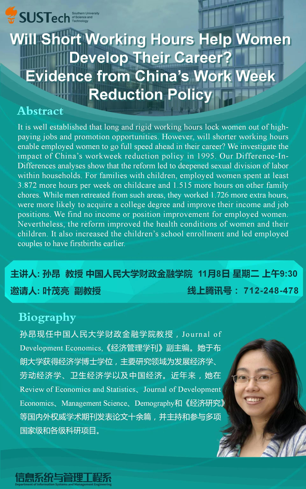

应叶茂亮副教授的邀请，中国人民大学财政金融学院孙昂教授于11月8日上午为信管系、商学院和南科大师生在腾讯会议上带来题为Will Short Working Hours Help Women Develop Their Career? Evidence from China's Work Week Reduction Policy的学术讲座。该研究探讨中国90年代中期的双休日政策如何影响妇女的职业生涯、夫妻双方的家务分摊以及夫妻和小孩等各家庭成员的福利。孙昂教授目前担任Journal of Development Economics,《经济管理学刊》副主编，主要研究领域为发展经济学、劳动经济学、卫生经济学以及中国经济。
信管系和商学院师生、国内外各大高校相关华人学界同行等数十人在线参与热烈讨论，讲座受师生广泛好评。该讲座进一步促进商学院和国内同行及国际知名学者的交流，提升南科大商学院在国内外经管学界的知名度。

为推动校内外的经济管理学术交流，叶茂亮已邀请行为（含行为理论）、实验、政治和发展经济学等（应用）微观经济领域的多位国际领军和知名学者带来高质量的线上讲座。此前受邀的学者包括德州大学讲席教授Gary Bolton, 牛津大学、加州大学圣地亚哥分校教授Vincent Crawford, 普林斯顿大学教授Leeat Yariv, Yan Chen, Paola Giuliano, Paul Healy, Axel Ockenfels, Gerard Padr´oi Miquel等知名学者。